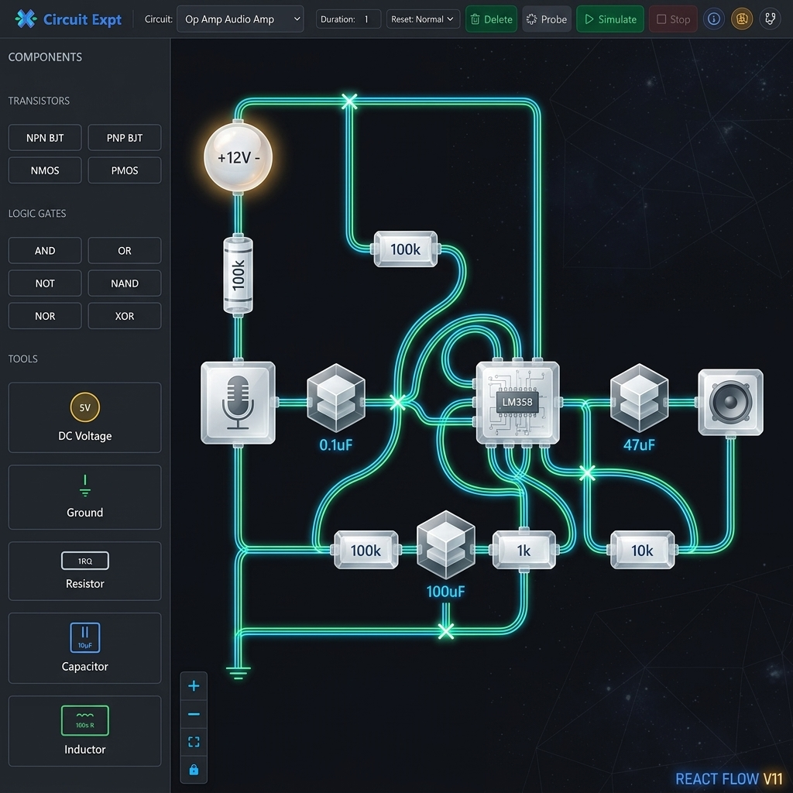
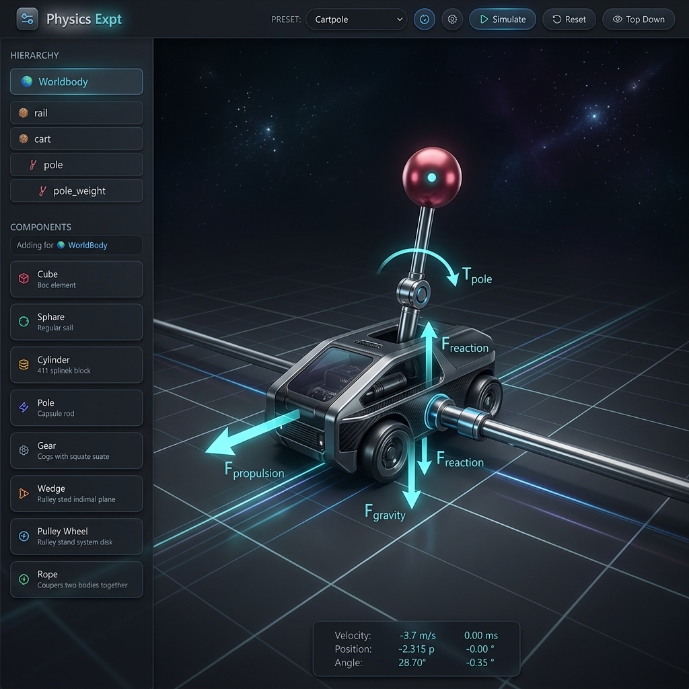
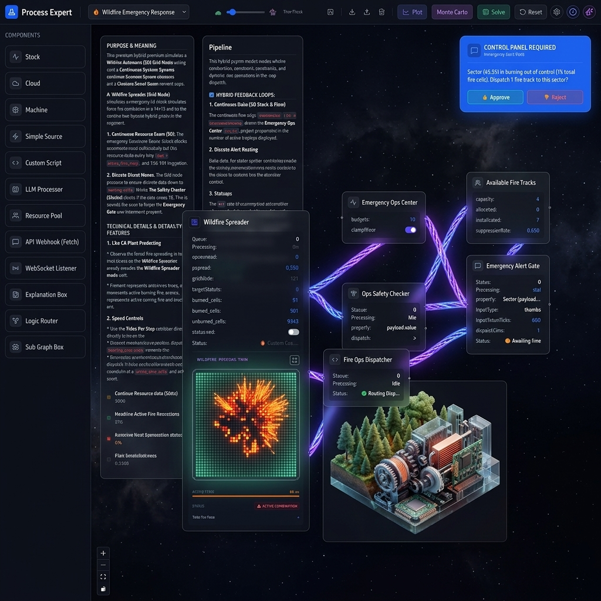

Three hyper-realistic, open-source simulation engines running 100% in your browser. From microsecond electronics to multi-axis mechanical assemblies and adaptive ecosystem graphs—run instantly, locally, and completely free.
A triad of specialized simulation tools designed to eliminate the boundary between raw physical mathematics and user-friendly visual interaction.

A high-fidelity electronics playground powered by an optimized, custom-compiled Ngspice WebAssembly engine. Design, wire, and test complex electrical circuits with true physical waveforms rendered live in your browser.

An advanced mechanical simulator powered by a custom-compiled MuJoCo WebAssembly engine. Designed around high structural realism, this playground ensures physical forces and joint constraints reflect reality without floating hacks.

A hybrid systems simulator engineered to model complex relationships, cellular events, and system cycles. Bridge the gap between deterministic calculus and stochastic environmental cellular grids.
Bridging cognitive reasoning with physically and sociologically accurate environments. expt.in provides zero-latency local action spaces where agents can test layouts, solve physical problems, and safely interact with real-world systems.
Large Language Models are exceptional at writing code and reasoning through text, but they operate in a physical vacuum. Without realistic feedback, an AI agent cannot correctly optimize an audio amplifier circuit, balance an unstable mechanical linkage, or coordinate disaster dispatch resources. They need grounded world models to solve complex, multi-modal tasks.
expt.in solves this by exposing simplified, highly accurate physical and sociological engines directly to AI agents. It provides a robust, local sandboxed sandbox where agents can explore bounds, isolate failure points, and solve complex problems they otherwise couldn't touch.
Built entirely on client-side WebAssembly, our simulators enable AI agents to bridge the gap between abstract reasoning and concrete execution. Agents can utilize browser automation (like Puppeteer or Playwright) or standard WebSockets to interact with simulations in real-time:
By compiling industry-standard C simulation libraries to WebAssembly, we deliver desktop-grade physics and electronics directly in the browser.
Native C simulation cores like Ngspice and MuJoCo compiled directly to WebAssembly for native-level execution speeds and complete browser sandboxing.
State-of-the-art interactive node editors supporting complex schematic loops, properties sliders, and multi-node routing with custom Monaco Javascript blocks.
Asynchronous APIs (like LLM prompts or IoT webhook requests) are bridged gracefully into high-frequency 60fps simulation clocks using non-blocking state flags.
Runs entirely client-side. The landing page, assets, and all three simulators operate smoothly with zero external database dependencies or subscription models.
We believe scientific and educational tools should be accessible to everyone, everywhere. expt.in is completely free to use, contains no hidden tiers, requires no account creation, and will remain open-source forever. You can clone the repositories and run them offline locally.